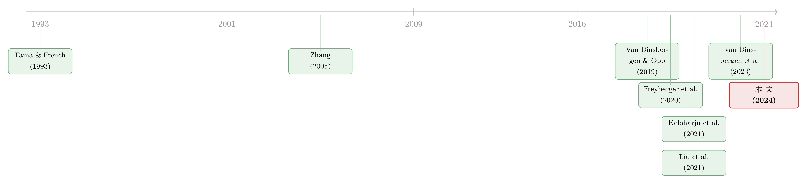

同一个 book-to-market，凭什么有的「值钱」有的「不值钱」？
本文读的是 Baba-Yara, Boons & Tamoni (2024, JFE)：把一个公司特征拆成「持久」与「暂时」两块，作者发现不同特征对这两块的补偿在量级和符号上都不一样——有的特征收益衰减得太慢（持久成分被定价），有的衰减得太快（暂时成分被定价）。一个三年前排好的高减低账面市值比组合，相对今天最新排序，每年还能多赚 4.40%（t = 2.28）。现有的因子模型，全军覆没。
1 一个被所有人默认、却从没被认真问过的问题
横截面资产定价这门生意，做了几十年，套路其实很固定：拿一个公司特征——规模、账面市值比、盈利能力、投资——按它今天的取值给股票排个序，多空一头一尾，看看能不能赚到钱。能赚到，就说这个特征「预测收益」。于是我们有了 Fama-French 三因子、五因子，有了 q 因子，有了一座越堆越高的「因子动物园」。
但这里藏着一个几乎从没被人正面拷问的默认假设：我们总是用特征的「最新值」来排序。今天的账面市值比、今天的盈利、今天的规模。仿佛一只股票的预期收益，只取决于它此刻的特征读数，而与它「是怎么走到这个读数的」毫无关系。
可是稍微想一想就会觉得不对劲。两只股票，今天的账面市值比一模一样地高。一只是十年如一日的「老价值股」，它的高 B/M 是结构性的、持久的；另一只是上个季度刚被市场砸下来的「临时便宜货」，它的高 B/M 是暂时的、很快就会反弹回去的。它们今天看起来一样，但它们「未来」会一样吗？它们该拿一样的预期收益吗？
这正是本文的张力所在：横截面研究几乎只盯着短期收益和最新排序，而真实世界里投资者的持有期远不止一个月，企业估值贴现的更是几十年的现金流。把「时间维度」（horizon）请回来，故事就完全不一样了。
2 一个最朴素的分解
作者的出发点简单到近乎天真。把任意一个公司特征 \(X_t\) 拆成两块——一块持久 (persistent)，一块暂时 (transitory)：
$$X_t = X_t^P + X_t^T$$
然后假设一只股票的预期收益由它的市场 beta，外加对这两块成分的补偿共同决定：
再加一条关键假设：两块成分对「因子暴露」（factor exposure，也就是 beta、也就是风险）的贡献是相等的。这一条很重要——它对应着现实中我们构造因子的方式：我们就是简单地拿「没有被分解的」整个特征 \(X_t\) 去排序、去造因子，从来不区分它的来路。
现在，整个故事的悬念就被压缩成了一个问题：\(\lambda_P\) 和 \(\lambda_T\) 一样吗？
如果一样（\(\lambda_P = \lambda_T > 0\)），那么 \(E_t(R_{t+1}) = \lambda_M \beta_M + \lambda (X_t^P + X_t^T) = \lambda_M \beta_M + \lambda X_t\)——预期收益就只跟「整个特征」\(X_t\) 成正比。而风险（beta）也跟 \(X_t\) 成正比。于是预期收益和风险会以完全相同的速度随 \(X_t\) 衰减。这就是作者所说的「标准的、基于特征的预期收益模型」的零假设。
近年有一派很有影响力的观点——以 Keloharju, Linnainmaa & Nyberg (2021) 为代表——更进一步地主张：特征里被定价的，主要是暂时的那块（即 \(\lambda_P \approx 0\)），因为特征捕捉的更多是会被纠正的错误定价 (mispricing)，而错误定价天然是暂时的。
而本文的反驳一针见血：凭什么所有特征都一个样？ 像账面市值比这么持久的一个特征，它的预测能力如果完全来自暂时成分，那未免太说不过去了。作者的核心主张是——\(\lambda_P\) 相对 \(\lambda_T\) 的大小，在不同特征之间差异巨大，不仅量级不同，连符号都会反过来。
3 识别策略：让「旧排序」去考「新排序」
但 \(X_t^P\) 和 \(X_t^T\) 是看不见的，怎么把 \(\lambda_P\) 和 \(\lambda_T\) 分开？
这正是全文最漂亮的一步。作者不去硬拆那两块成分，而是利用一个事实：暂时成分衰减得快，持久成分衰减得慢。所以只要观察「组合排好之后、随着时间推移收益是怎么变的」，就能把两者的相对补偿读出来。
具体做法：在 \(t-s\) 时刻按 \(X_{t-s}\) 把股票排成高减低十分位组合，然后买入持有，观察它在 \(t+1\) 的收益。记作
$$R_{X,(t-s),t+1} = R^{H}_{X,(t-s),t+1} - R^{L}_{X,(t-s),t+1}$$
第一个下标是哪个特征（\(X = 1,\dots,56\)），第二个下标 \((t-s)\) 是排序日，第三个 \(t+1\) 是收益实现日。\(s = 0\) 就是「最新排序」（literature 里几乎只看它），\(s > 0\) 就是「旧排序」——三个月前、一年前、三年前排好、一直拿到今天的组合。
接着，一个自然的问题是：旧排序相对新排序，还有没有「超额」？把旧排序的收益对当期最新排序的收益做回归，看截距（无条件 alpha）：
$$R_{X,(t-s),t+1} = \alpha^{u}_{s} + \beta^{u}_{s} R_{X,(t),t+1} + \epsilon_{X,(t-s),t+1}$$
考虑到持久度本身会随时间变化，作者还算了一个条件 alpha——用过去 36 个月的滚动窗口估出当期的暴露 \(\beta^{c}_{s,t}\)，再算对冲后的平均收益：
$$\alpha^{c}_{s} = E\!\left(R_{X,(t-s),t+1} - \beta^{c}_{s,t}\, R_{X,(t),t+1}\right)$$
这里 \(\beta^{c}_{s,t}\) 来自滚动窗口回归：
$$R_{X,(\tau-s),\tau+1} = \alpha_{s} + \beta^{c}_{s,t}\, R_{X,(\tau),\tau+1} + \varepsilon_{X,(\tau-s),\tau+1}, \quad \tau = t-36 : t-1$$
这个 alpha 为什么是「检验 \(\lambda_P\) vs \(\lambda_T\)」的利器？关键在于回归里的 \(\beta\) 已经替我们控制住了持久度。新排序到旧排序，特征衰减了多少、风险衰减了多少，全被 \(\beta\) 吸收了。截距剩下的，只能是「收益的衰减速度」和「风险的衰减速度」不一致的那部分。于是：
- 零假设下（\(\lambda_P = \lambda_T\)）：收益和风险同速衰减，\(\alpha = 0\)；
- 只有暂时成分被定价（\(\lambda_P = 0\)）：旧组合的暂时成分早就跑光了，收益衰减得比风险快，\(\alpha < 0\)；
- 只有持久成分被定价（\(\lambda_T = 0\)）：旧组合的持久成分还在，收益衰减得比风险慢，\(\alpha > 0\)。
注意这个设计的精妙：它把一个关于「看不见的成分」的问题，翻译成了一个关于「可观测的收益衰减速度」的问题。而且用 alpha（而非像 Keloharju et al. 那样直接比新旧排序的平均收益）才说得清相对补偿——因为回归 beta 帮你扣掉了那个在各特征间差异极大的持久度。
4 数据
样本很标准也很扎实。56 个公司特征，沿用 Freyberger, Neuhierl & Weber (2020) 的口径；全部 NYSE / AMEX / NASDAQ 普通股，CRSP 月度与日度数据 + Compustat 年度报表数据。原始区间 1964 年 7 月到 2019 年 12 月，但因为要留出估计的「预热期」，所有结果的实际样本是 1972 年 7 月至 2019 年 12 月。按 NYSE 断点构造价值加权十分位组合（压住小盘股的影响），跟踪从形成后 1 个月直到 5 年的买入持有收益，退市时按净退市收益把投资再分配给组合内未缺失的股票。观测单位就是这些「特征 × 排序滞后 \(s\)」的多空组合月度收益。
5 主要结果：所有特征，并非生而平等
先看四个最经典的特征——规模、账面市值比、盈利能力、投资（也就是 Fama-French 五因子里的那四个）。
第一个反转，在符号上。 把旧排序对新排序做条件回归，账面市值比的 alpha 是正的：三年前排好的高减低 B/M 组合，相对今天最新的 B/M 组合，每年还能多赚 4.40%（t = 2.28）。换句话说，B/M 的收益衰减得太慢——持久成分在被定价。这个超额还相当值钱：最新 B/M 排序的夏普比率是 0.23，把它和「三年前的 B/M 排序」最优地组合起来，夏普比率能飙到 0.45，几乎翻倍。
可盈利能力 (profitability) 完全相反。它的条件 alpha 是负的且显著：到第三年是 -3.25%（t = -3.02），到第五年是 -3.16%（t = -2.81）。盈利能力的收益衰减得太快——这才是「暂时成分被定价」的样子。一正一负，泾渭分明。
把视野放到全部 56 个特征：23 个特征的旧排序给出显著为负的 alpha（左尾），另有 8 个给出显著为正的 alpha（右尾）。左尾的量级，标准模型的零假设解释不了；右尾的量级，「只有暂时成分被定价」这个假说同样解释不了。两边都被打脸——这正是「相对补偿在符号上都会变」最直接的证据。
第二个反转，在「新老股票」上。 作者还把最新排序的收益拆成「老股票」和「新股票」两部分：今天同样进了高 B/M 组合，但只有老股票在过去也一直待在（或接近）这个组合里。结果，一个只用老股票的 B/M 策略，比一个只用新股票的策略，每年的收益要高 7.37%（t = 2.48）——尽管这两批股票今天造出的 B/M 价差是一模一样的。持久地便宜，和临时地便宜，市场给的钱完全不同。
第三，对因子模型的总清算。 任何能给最新排序定价的模型，在零假设下都该能给旧排序定价。可作者把 56 个特征用第一主成分 (PC1) 的载荷聚合起来，构造一个「老对新」策略，它的超额收益在所有模型里 t 值都远超 3——这套模型清单囊括了 CAPM、Fama-French (1993)、Fama-French (2015)、Hou, Xue & Zhang (2015)、Stambaugh & Yuan (2016)、Daniel et al. (2020a, 2020b) 等等，无一幸免。更狠的是，作者把 PC1 按「正载荷／负载荷」拆成两个子成分，发现这些模型对两边同时束手无策。这是一个很强的联合证据：现有因子模型既说不清「为什么有些特征收益衰减得太快」，也说不清「为什么另一些衰减得太慢」。
道理其实不难懂：基于「新排序」造出来的因子，捕捉的是对一个特征的总补偿；可要给「老对新」定价，模型还得额外算清持久与暂时成分的相对补偿——而这一维，恰恰是整个文献几十年来集体忽略的。
6 落到企业身上：长期贴现率
如果持久成分真的被定价，那它就不该只是投资者交易台上的事——它会实打实地改变企业的长期贴现率。作者沿用 Keloharju et al. (2021, 6.3 节) 的思路，用戈登增长模型 (Gordon growth model) \(P = \dfrac{D}{r-g}\) 反解出隐含贴现率 \(r\)（主分析取增长率 \(g = 1\%\)）。
模型的预言很清楚：当只有暂时成分被定价时，高减低组合的隐含贴现率之差会很小；而当持久成分被定价时，这个差可以很大。数据印证了这一点——聚焦在那些「收益衰减太慢」（PC1 正载荷）的特征上，高减低的贴现率之差达到 2.5%（价值加权）和 3.5%（等权），至少是 Keloharju et al. (2021) 的 2.5 倍。为什么差这么多？因为那篇论文盯的是「一大堆特征的平均」，而平均会过度加权那些以暂时成分为主的特征，把持久的信号稀释掉了。单看个别特征也一样：高规模、高 B/M 的公司，隐含贴现率分别比低分位高 2% 和 1.5%（价值加权）；而盈利能力、投资这类特征，贴现率之差就小得多。
这条推论的现实分量在于资本预算：如果你是个 CFO，用 CAPM 算出来的资本成本去给一个几十年的项目贴现，而你公司恰好重仓在「持久成分被定价」的那一类特征上，你可能系统性地把贴现率算错了好几个百分点。基于特征的收益可预测性，不该在资本预算里被无视。（关于贴现率为何是资产定价的中心议题，可参见《贴现率：资产定价的中心议题》。）
7 文献脉络
这条线的源头，是横截面可预测性本身。Fama & French (1993) 把规模与账面市值比铸成因子，从此「按最新特征排序造因子」成了行业标配，后来的 Fama & French (2015) 五因子、Hou, Xue & Zhang (2015) 的 q 因子莫不如此。理论那一侧，Zhang (2005)、Gomes, Kogan & Zhang (2003) 给价值溢价提供了理性的均衡解释——有意思的是，本文的零假设在这些理论里近似成立。

机器学习浪潮（Freyberger, Neuhierl & Weber, 2020；Gu, Kelly & Xiu, 2020；Kozak, Nagel & Santosh, 2020）把这件事推到极致：在越来越大的特征集合里寻找能最好预测短期收益的函数形式（关于因子动物园如何被「收缩」，可参见《压缩横截面》）。但它们的目光，依旧只锁在 \(s = 0\)。
接着，一个把「时间维度」请回来的转向出现了。Keloharju, Linnainmaa & Nyberg (2021) 用长期收益指出，平均而言特征的收益衰减太快，并据此主张被定价的主要是暂时的错误定价；Liu, Moskowitz & Stambaugh (2021) 给出了「错误定价比风险更暂时」时模型会被扭曲的机制；Van Binsbergen & Opp (2019)、Cho & Polk (2020)、van Binsbergen, Boons, Opp & Tamoni (2023) 则用长期收益去测量「价格楔子」（price wedge）。Chernov, Lochstoer & Lundeby (2022) 从另一个角度发现：能给单期收益定价的 SDF，未必能给多期收益定价。
本文正坐落在这股转向的关键节点上：它不否认 Keloharju et al. 的「平均太快」，而是反驳「所有特征都太快」——通过把特征拆成持久/暂时、再用「老对新」的 alpha 去识别相对补偿，它指出符号会在特征之间反转，从而对「只有暂时成分被定价」这一近期颇受推崇的观点构成了正面挑战。（关于「风险 vs 错误定价」之争，亦可参见《不需要那些「玄学风险」》。）
8 评论与延伸（Q&A + 研究方向）
(a) 几个可能的疑问
Q：这跟动量、跟「老股票 vs 新股票」有什么本质区别？
区别在「控制了持久度之后还剩什么」。Jegadeesh & Titman (1993) 式的做法是直接比不同排序日组合的平均收益，但那把「持久度差异」和「相对补偿差异」混在一起了。本文的 alpha 用回归 beta 扣掉了持久度（风险衰减），剩下的截距才干净地对应 \(\lambda_P\) 与 \(\lambda_T\) 的相对大小。所以它不是又一个动量变种，而是一个识别参数的设计。
Q：正 alpha 会不会只是「老组合换手低、交易成本省下来」的假象？
不是成本故事。这里的 alpha 来自买入持有组合之间的收益比较，而且符号会反转——交易成本只会单向地侵蚀收益，解释不了「为什么 B/M 是正、盈利能力是负」。作者的稳健性检验也表明结论在子样本、以及用「特征价差衰减」来另算 alpha 时都站得住。
Q：用三年前的排序去赚钱，听起来太好了，是不是数据挖掘？
警惕是对的，但有两点托底：一是聚合后的「老对新」策略 t 值远超 3，且在八套主流因子模型下都打不掉；二是这个聚合策略对 56 个特征几乎是中性的（不显著载荷在任何单一特征上），却仍有非零超额——这恰恰说明收益来自被忽略的「相对补偿」那一维，而非某个特征的过拟合。
Q：「持久成分被定价」到底是风险还是错误定价？
本文有意不回答这个。它的贴现率推论站在「风险补偿」视角，但作者明说结果同样能和「错误定价」视角共鸣（如 Cho & Polk, 2020；van Binsbergen et al., 2023 发现 B/M 的总错误定价大、盈利能力的小，正好和这里的符号呼应）。识别风险 vs 错误定价的驱动，作者诚实地留给了未来。
Q：贴现率效应是 Keloharju et al. 的 2.5 倍，是不是哪里算重了？
不是重复计算，而是加权口径不同。那篇论文聚焦「一大堆特征的平均」，平均会过度加权以暂时成分为主的特征，把持久信号摊薄；本文专门挑出 PC1 正载荷（衰减太慢）的那一类，自然更大。两个数字并不矛盾，它们量的是不同的对象。
Q：PC1 载荷只由收益协方差决定，会不会跟「老对新表现」其实没关系？
作者自己点了这个张力：主成分载荷只看协方差矩阵，理论上忽略了新旧排序的相对表现。但实证上，PC1 载荷却和老对新的 alpha 强相关——这本身就是个待解释的事实。他们在 Online Appendix A 用最小的额外假设把这个联系也纳入了模型。
(b) 几个可能的研究问题与提案
1. 把这套「持久/暂时」识别搬到公司债横截面。 【经济故事】信用利差里同样混着持久成分（评级、杠杆这些结构性的）和暂时成分（流动性冲击、临时错误定价）。如果股票里「相对补偿因特征而异」成立，债券里很可能也成立，且对久期定价、对长期信用贴现率意义重大。 【可行性】中。数据上 TRACE + Mergent FISD + Compustat 可得，可照搬「按 \(t-s\) 排序、买入持有、算老对新 alpha」的设计；难点在债券换手稀、买入持有收益噪声大，需要在组合层面聚合并处理到期/赎回。
2. 外资持有人是「持久」还是「暂时」的边际定价者？ 【经济故事】如果某类特征的持久成分被定价，那一定有一类「长持有期」的投资者在为它买单。外国机构的持有期、再平衡频率与本土投资者不同，很可能正是持久成分溢价的承担者或制造者。 【可行性】中。需要 13F / FactSet 的持有人结构、或外资持仓数据，把「特征的持久成分载荷」与「持有人构成」做横截面匹配；识别上可借某次纳入指数/资本账户开放作为外生冲击。难在把「持久成分」这个潜变量稳健地估出来。
3. 流动性特征的持久 vs 暂时分解。 【经济故事】流动性本身既有结构性的一面（做市能力、上市层级），又有高度暂时的一面（冲击、踩踏）。本文 56 个特征里若含流动性类，正 alpha 还是负 alpha？这直接关系到「流动性溢价是补偿长期风险还是短期错误定价」这一老争论。 【可行性】高。完全在本文数据框架内，只需把流动性类特征单拎出来做老对新 alpha，再和换手率衰减对照即可，几乎无需新数据。
4. 把贴现率推论拿去做资本预算的实证检验。 【经济故事】如果重仓「持久成分被定价」特征的公司，其真实资本成本被 CAPM 系统性低估，那它们的投资行为是否会被扭曲？可以检验这类公司的投资—贴现率敏感性。 【可行性】中低。隐含贴现率的估计依赖戈登模型与 \(g\) 的假设，外推到企业投资决策时识别较弱，需要一个能把「贴现率误估」和投资分开的准实验，doable 但不轻松。
9 我的判断
这是一篇「设计大于数据」的论文，而且设计得极漂亮。它最大的贡献，是把一个看似形而上的问题——「同一个特征读数，来路不同该不该同价」——压成了一个可证伪的、关于收益衰减速度的检验，并用「老排序对新排序的 alpha」这一招，干净地把持久与暂时的相对补偿分了出来。它最有冲击力的发现不是某个 alpha 显著，而是 alpha 的符号会在特征之间反转：这一点同时反驳了两个流行立场（标准模型的「同速衰减」与近期的「只有暂时被定价」），并把矛头指向了整个因子动物园只盯最新排序、只盯短期的方法论盲区。
要我说担忧，主要有三处。其一，持久/暂时是潜变量，整套识别建立在「暂时衰减快、持久衰减慢、两者对 beta 等额贡献」这几条假设上，尤其「等额贡献 beta」这条相当强，一旦不成立，alpha 的符号解释就会松动。其二，长期买入持有收益本身噪声极大，三年、五年滞后的组合样本独立性差、t 值的有限样本性质值得追问，作者用 PC1 聚合来提信噪比是对的，但聚合也带来了「PC1 载荷为何与老对新表现相关」这个新的待解之谜。其三，全文回避了风险 vs 错误定价的归因——这是诚实，但也意味着「持久成分被定价」究竟是因为它对应某种长期风险，还是因为某种慢速纠正的错误定价，目前仍是开放的。
我接下来最想看到的，是把这套识别搬出股票、搬进信用市场：债券的久期天然把「时间维度」放在台面上，如果「相对补偿因特征而异」在那里也成立，对长期信用贴现率和资本配置的含义，会比在股票里更直接、也更可度量。
参考文献
- Baba-Yara, F., Boons, M., Tamoni, A. (2024). Persistent and transitory components of firm characteristics: Implications for asset pricing. Journal of Financial Economics 154, 103808.
- Chernov, M., Lochstoer, L. A., Lundeby, S. R. (2022). Conditional dynamics and the multi-horizon risk-return trade-off. Review of Financial Studies 35, 1310–1347.
- Cho, T., Polk, C. (2020). Asset pricing with price levels. Available at SSRN 3499681.
- Daniel, K., Mota, L., Rottke, S., Santos, T. (2020). The cross-section of risk and returns. Review of Financial Studies 33, 1927–1979.
- Fama, E. F., French, K. R. (1993). Common risk factors in the returns on stocks and bonds. Journal of Financial Economics 33, 3–56.
- Fama, E. F., French, K. R. (2015). A five-factor asset pricing model. Journal of Financial Economics 116, 1–22.
- Freyberger, J., Neuhierl, A., Weber, M. (2020). Dissecting characteristics nonparametrically. Review of Financial Studies 33, 2326–2377.
- Gomes, J., Kogan, L., Zhang, L. (2003). Equilibrium cross section of returns. Journal of Political Economy 111, 693–732.
- Hou, K., Xue, C., Zhang, L. (2015). Digesting anomalies: An investment approach. Review of Financial Studies 28, 650–705.
- Jegadeesh, N., Titman, S. (1993). Returns to buying winners and selling losers: Implications for stock market efficiency. Journal of Finance 48, 65–91.
- Keloharju, M., Linnainmaa, J. T., Nyberg, P. (2021). Long-term discount rates do not vary across firms. Journal of Financial Economics 141, 946–967.
- Liu, J., Moskowitz, T. J., Stambaugh, R. F. (2021). Pricing without mispricing. NBER Working Paper.
- Stambaugh, R. F., Yuan, Y. (2016). Mispricing factors. Review of Financial Studies 30, 1270–1315.
- van Binsbergen, J., Boons, M., Opp, C., Tamoni, A. (2023). Dynamic asset (mis)pricing: Build-up vs. resolution anomalies. Journal of Financial Economics 147, 406–431.
- Van Binsbergen, J. H., Opp, C. C. (2019). Real anomalies. Journal of Finance 74, 1659–1706.
- Zhang, L. (2005). The value premium. Journal of Finance 60, 67–103.